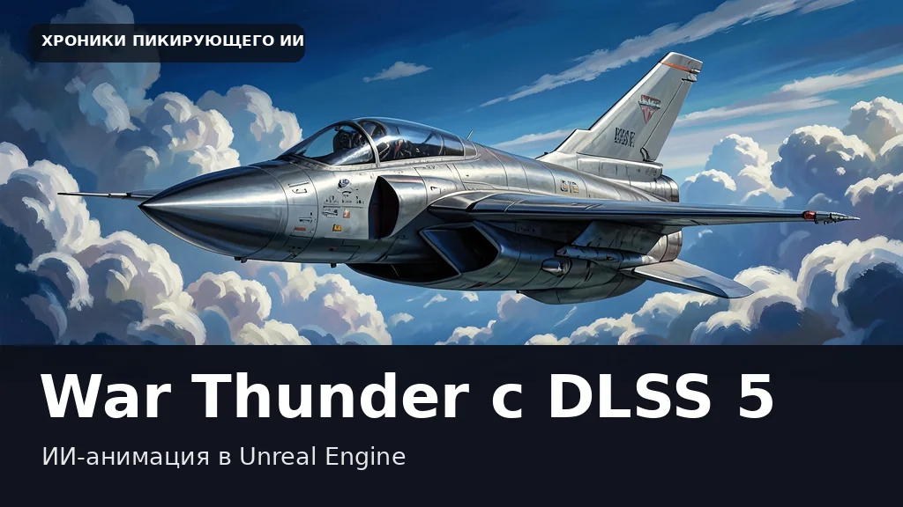

War Thunder примерил DLSS 5, а в Unreal Engine прописался первый ИИ-аниматор
Этот текст и иллюстрация созданы автоматически. В статье могут быть неточности; это не опубликованная редакционная новость.

Игровая индустрия продолжает обрастать нейросетями не по дням, а по часам. Компания NVIDIA выкатила порцию обновлений для разработчиков игр, среди которых нашлось место и продвинутому рендерингу, и генерации движения. Самым заметным событием стала интеграция DLSS 5 с технологией трёхмерно-направленной нейронной визуализации в движок Dagor Engine, которую провела команда Gaijin Entertainment для War Thunder.
Чтобы графика не превратилась в сплошное мыло, авторам игры пришлось знатно повозиться с пайплайном управления цветом. Новые алгоритмы сначала оценивают картинку в пространстве sRGB до наложения интерфейса и постобработки, а затем переносят результаты обратно в линейный HDR. Разработчики отмечают, что технология даёт невероятный микроконтраст и проработку теней, недоступную ранее. Впрочем, всё это настраивали с оглядкой на оригинальный стиль, чтобы техника и камуфляж выглядели аутентично в любых погодных условиях.
Тем временем Unreal Engine 5.9 Preview обзавёлся первой встроенной моделью для генерации анимации персонажей прямо на таймлайне. Инструмент под названием NVIDIA Kimodo позволяет анимировать героев внутри Sequencer с помощью текстовых подсказок, опорных поз и нарисованных от руки траекторий. Пакет дополнен свежими версиями SDK для внутриигрового инференса и инструментами отладки лучей, так что скучать разработчикам точно не придётся.
Дата объявления в RSS: 2026-11-24. Дата черновика: 2026-11-25.